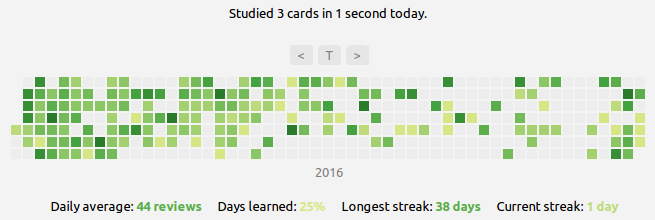

Tìm hiểu về cách học và ôn tập sử dụng Anki¶
Một bài viết tương đối đầy đủ về cách học tập và ôn tập sử dụng Anki. Trong bài viết Augmenting Long-term Memory thì chú Michael Nielsen có viết:
"The single biggest change that Anki brings about is that it means memory is no longer a haphazard event, to be left to chance. Rather, it guarantees I will remember something, with minimal effort. That is, Anki makes memory a choice."
(Dịch qua: Sự thay đổi lớn nhất mà Anki mang lại là trí nhớ không còn là một sự kiện ngẫu nhiên, để mặc cho sự may rủi. Thay vào đó, Anki sẽ đảm bảo rằng tôi nhớ được điều gì đó, với nỗ lực tối thiểu. Vậy đấy, Anki khiến việc ghi nhớ trở thành một lựa chọn)
Việc hiểu được nguyên lý hoạt động của việc học tập và ghi nhớ trên Anki thực sự rất quan trọng. Rất nhiều người đã từ bỏ sử dụng Anki chỉ sau một thời gian ngắn.
T cũng học bằng Anki được gần 2 năm, t thì mới tốt nghiệp YHN, thực sự Anki giúp t rất nhiều trong việc ôn thi. Cộng đồng học Y sử dụng Anki trên thế giới đông khủng khiếp. Vấn đề ko nằm ở cách sử dụng, hay các add-on; t thấy hãy quên nó đi, quan trọng là cách bạn đặt câu hỏi và câu trả lời; quan trọng hơn nữa là cách bạn review lại kiến thức. Khi t review lại bài, t luôn luôn cầm theo quyển vở nháp, và viết đáp án ra giấy (hoặc câu nào dễ quá thì cũng phải nói ra mồm); thay vì bấm hiện đáp án ngay, hãy cố gắng recall lại kiến thức trong đầu và viết nó ra. (Trích từ một bình luận trên bài viết Tròn 1 năm sử dụng Anki Flashcards để nhớ mọi thứ và một số ghi chú)
Bàn về Anki, lặp lại ngắt quãng (spaced repetition) và active recall¶
Anki là một ứng dụng học flashcard được Damien Elmes phát hành lần đầu tiên vào năm 2006. Chương này sẽ thảo luận về lý do tại sao Anki là ứng dụng học flashcard tốt nhất. Chúng ta sẽ thảo luận về tất cả những lợi ích mà Anki sẽ mang lại và tại sao Anki sẽ giúp bạn học tập và ghi nhớ hiệu quả hơn.
Rất nhiều các nghiên cứu đã chỉ ra sự hiệu quả của việc sử dụng Flashcard. Với Active Recall và lặp lại ngắt quãng, việc sử dụng Flashcard trong các phần mềm SRS (Ở đây là Anki) đã khiến cho việc ghi nhớ trở thành một lựa chọn (Anki makes memory a choice).
Active Recall¶
Active Recall (Dịch nôm na sang Tiếng Việt là "Nhớ lại một cách chủ động") là một trong hai kỹ thuật quan trọng nhất mà Anki sử dụng. Active Recall có nghĩa là khi bạn nhìn thấy một thẻ ghi nhớ, bạn phải chủ động tìm kiếm câu trả lời trong trí nhớ của mình. Đó là vì mỗi một thẻ ghi nhớ là một cặp câu hỏi và câu trả lời. Để trả lời câu hỏi trong mỗi thẻ ghi nhớ, bạn phải hiểu câu hỏi trước đã. Phải hiểu câu hỏi trước thì bạn mới có thể trả lời được.
Việc hiểu được câu hỏi và tìm ra câu trả lời sẽ khiến bạn cần phải suy nghĩ khá nhiều. Nghe có vẻ đơn giản nhưng việc này hoàn toàn trái ngược với cách học truyền thống. Theo cách học truyền thống, bạn học bằng cách đọc một văn bản. Khi bạn đọc xong, khả năng cao là bạn sẽ không nhớ gì cả. Cách duy nhất để thực sự nhớ được nội dung là tự hỏi bản thân những câu hỏi về những gì đã được dạy. Việc tạo thẻ ghi nhớ từ những câu hỏi này chính là cách để bạn học được nhiều nhất.
Nhiều nghiên cứu cũng đã chỉ ra rằng Active Recall thực sự có hiệu quả. Ví dụ, trong một cuộc nghiên cứu (không rõ nguồn), những học sinh học bằng phương pháp Active Recall có kết quả học tập tốt hơn đáng kể so với những học sinh sử dụng các kỹ thuật học thụ động, chẳng hạn như đọc lại ghi chú của họ.
SRS - Hệ thống lặp lại ngắt quãng¶
Trong bài viết về SRS của Antimoon, Tom có viết rằng:
Ưu điểm cực lớn từ SRS là thay vì mỗi lần ôn lại tất cả từ vựng (như một số các phương pháp truyền thống như ghi chép, chép lại từ mới .v.v), bạn chỉ ôn lại một phần nhỏ trong số đó vì phần mềm lặp lại ngắt quãng biết từ nào bạn nhớ rõ và từ nào bạn nhớ kém nên nó sẽ giúp bạn không lãng phí thời gian vào những điều đã được biết rõ. Chỉ cần ôn lại những điều bạn thực sự cần ôn lại - những thứ có nguy cơ bị quên.
Kết quả khá ấn tượng: Bạn có thể ghi nhớ hàng nghìn từ và cụm từ dù chỉ cần 10 phút mỗi ngày để ôn tập. Nó giống như gắn thêm một ổ cứng vào đầu vậy.
Trích từ bài viết Introduction to SRS được viết bởi Tom trên Antimoon. Bản dịch Tiếng Việt của bài viết
Mô hình bộ nhớ trong phần mềm lặp lại ngắt quãng dựa trên nghiên cứu khoa học về trí nhớ con người. Ký ức trở nên mạnh mẽ hơn sau mỗi lần ôn lại. Ví dụ: sau khi bạn học một từ mới, bạn có thể nhớ nó trong 2 ngày (với xác suất là 90%). Nếu bạn xem lại nó sau 2 ngày, bạn sẽ nhớ nó thêm 5 ngày nữa. Nếu bạn xem lại sau 5 ngày đó, bạn sẽ nhớ nó thêm 10 ngày nữa. Sau đó, thêm 20 ngày nữa. Và như thế. Thời gian giữa các lần ôn tập ngày càng dài hơn.
Anki là sự kết hợp của Active Recall (Ôn tập chủ động) và Spaced Repetition (Lặp lại ngắt quãng), giúp xây dựng một quá trình học tập cực kỳ hiệu quả. Đồng thời, giảm đáng kể thời gian bạn cần dành cho việc học và tăng đáng kể lượng kiến thức bạn biết nếu bạn dành cùng một lượng thời gian học như trước khi sử dụng các kỹ thuật này.
Chọn khoảng thời gian phù hợp¶
Sẽ có những lựa chọn ôn tập sau:
- Lựa chọn ôn tập 1 - Học nhồi nhét trước kỳ thi: Ngày 26, 27, 28, 29, 30, 31 tháng 12.
- Lựa chọn ôn tập 2 - Thủ khoa Ivy League không bao giờ trì hoãn: Ôn tập vào ngày đầu tiên mỗi tháng - ngày 1 tháng 1, ngày 1 tháng 2, ngày 1 tháng 3, ngày 1 tháng 4, v.v.
- Lựa chọn ôn tập 3 - Lặp lại cách quãng: Ngày 1 tháng 1, ngày 3 tháng 1, ngày 20 tháng 1, ngày 28 tháng 2, ngày 15 tháng 4, ngày 30 tháng 9.
Lựa chọn ôn tập 3 (Lặp lại cách quãng) giúp bạn có khả năng ghi nhớ dài hạn cao nhất. Lý do cho điều này:
- Việc nhồi nhét chỉ giúp bạn đưa kiến thức vào bộ nhớ ngắn hạn và sẽ bốc hơi ra khỏi đầu bạn nhanh thôi.
- Lựa chọn số 2: Mỗi lần ôn tập là phải ôn tập toàn bộ nội dung.
- Bộ não của chúng ta hoạt động tốt nhất thông qua các lần ôn tập ngắt quãng. Bởi:
"Mô hình bộ nhớ trong phần mềm lặp lại ngắt quãng dựa trên nghiên cứu khoa học về trí nhớ con người. Ký ức sẽ trở nên mạnh mẽ hơn sau mỗi lần ôn lại [...] Vì thời gian giữa các lần lặp lại dài hơn nên khối lượng công việc của bạn (số lần lặp lại hàng ngày) ngày càng giảm. Bạn sử dụng SRS càng lâu thì càng mất ít thời gian để ghi nhớ một nhóm từ trong bộ nhớ".
Hệ thống lặp lại ngắt quãng thực sự hiệu quả.
Hướng dẫn cài đặt Anki¶
Mình đã viết Hướng dẫn cài đặt và sử dụng Anki cơ bản. Bài viết hướng dẫn về Anki này sẽ hướng dẫn cách cài đặt, sử dụng Anki cơ bản và thiết lập Add-ons.
Thiết lập Anki nâng cao¶
Một số mẹo nhanh¶
Bây giờ bạn đã biết Anki hoạt động như thế nào, tại sao bạn nên sử dụng nó và cách bạn có thể sử dụng nó. Tuy nhiên, có một số mẹo và thủ thuật đặc biệt mà tôi đã học được trong những năm qua khi học với ứng dụng này sẽ giúp ích cho bạn.
Cách tạo thẻ ghi nhớ từ ghi chú giấy nhanh¶
Sử dụng ứng dụng OCR hoặc Google Lens rồi ném lên máy tính (Với nhà Apple thì dùng AirDrop hoặc với Android và các hệ thống khác thì có thể dùng KDEConnect hoặc gửi qua Messenger hoặc Zalo).
Học thuộc phím tắt¶
Bạn cũng có thể học thuộc phím tắt trên Anki để giúp cho việc sử dụng được thuận tiện hơn. Một số phím mà cá nhân mình thường dùng:
- 1, 2, 3, 4: Chấm điểm
d- Về trang chủ của Ankie- Sửa lại nội dung thẻ khi đang ôn tậpb- Truy cập mụcBrowsecủa Ankiy- Synct- Xem thống kê của AnkiCtrl-Shift-A- Truy cập vào mục Add-ons
Và còn nhiều nữa
Sử dụng Anki hàng ngày¶
Khi bạn đã biết được Anki thực sự hiệu quả, việc còn lại chỉ là sử dụng Anki hàng ngày
Với những người mới bắt đầu tập sử dụng Anki, việc có một thói quen học tập và sự khó khăn trong việc sử dụng Anki là kẻ thù hàng đầu. Việc duy trì thói quen hàng ngày là một điều vô cùng quan trọng trong việc sử dụng Anki.
Đây là một số mẹo có thể giúp bạn xây dựng thói quen sử dụng Anki hàng ngày:
1. Sử dụng Review Heatmap Addon¶
Bấm để tải Review Heatmap Addon

(Trong màn hình chính của Anki chọn Tools > Add-ons > Get Add-ons và sao chép mã vào trong ô đó (của Review Heatmap là 1771074083))
Addon này giúp bạn quan sát được tiến trình học tập của bạn và có thể sẽ tạo động lực học tập cho bạn.
2. Duy trì sự tập trung trong khi ôn tập.¶
Việc ôn tập Anki sẽ rất chán, vậy nên hãy chuẩn bị và tập trung vào việc hoàn thành Anki hàng ngày.
3. Khởi đầu nhỏ hàng ngày và xây dựng thành một thói quen.¶
Về cơ bản là cuốn Atomic Habit.
Tham khảo¶
Bài viết được tham khảo từ nhiều nguồn khác nhau: